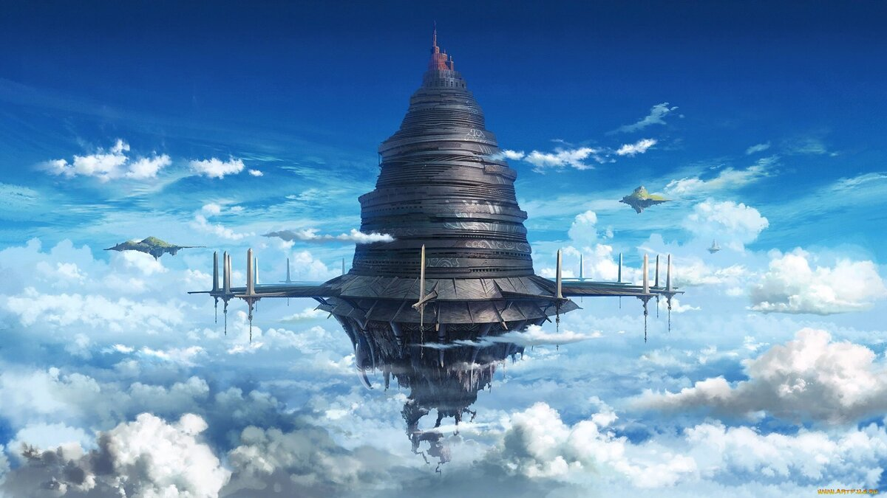
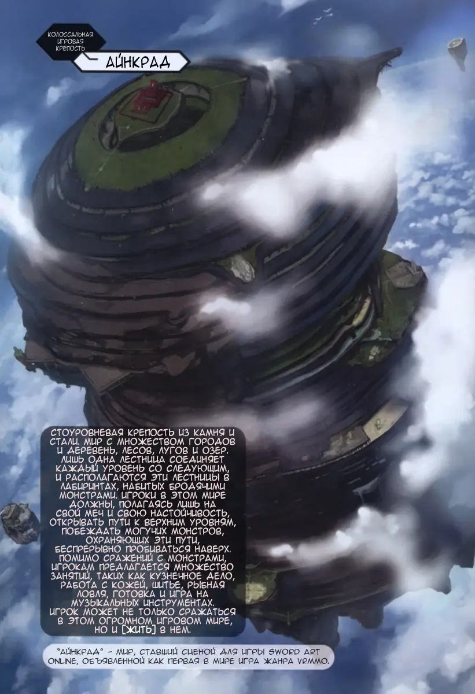
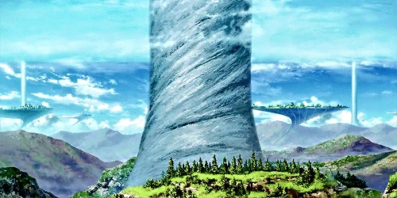
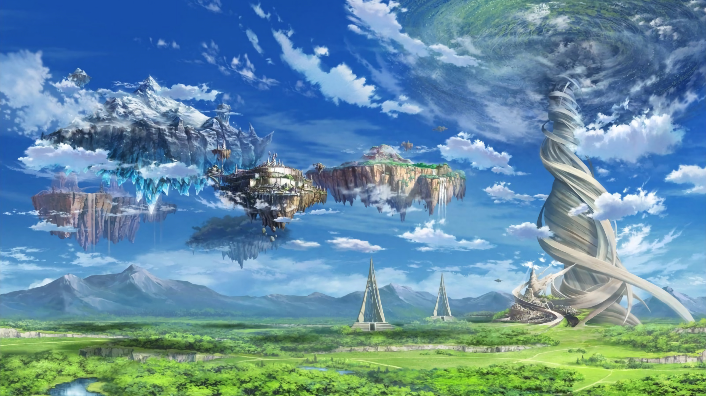
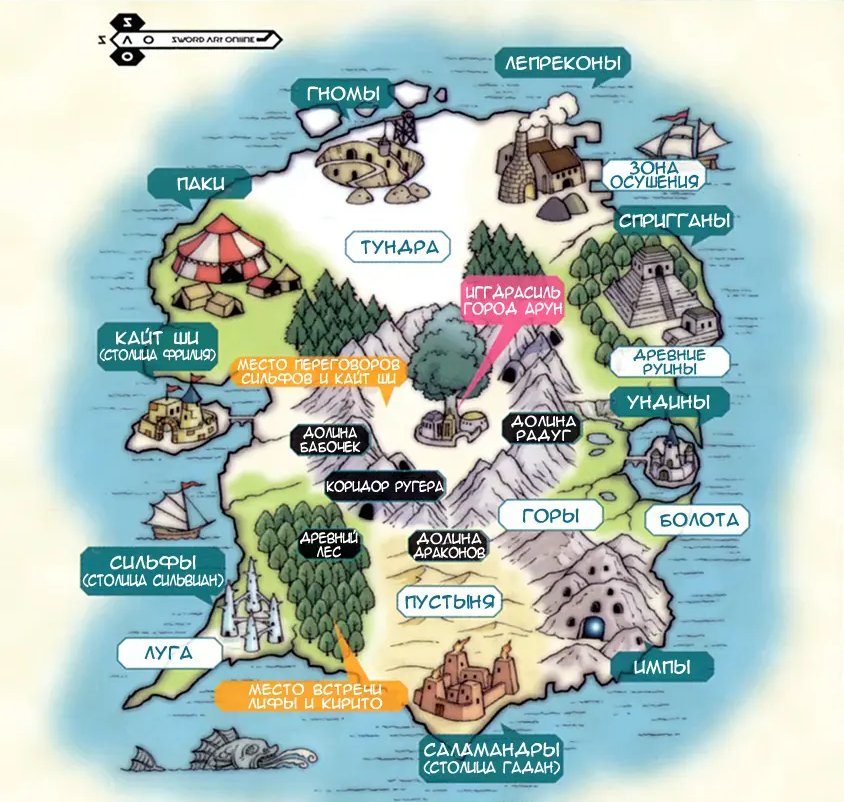
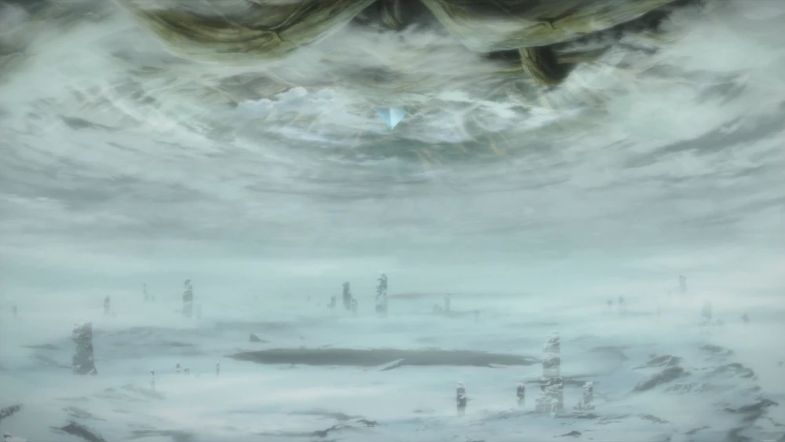
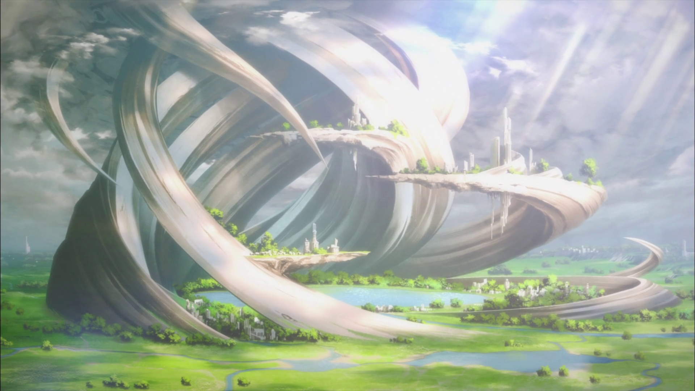

Места из SAO
Айнкрад
Айнкрад, показаный в «Sword Art Online», является первым «Реализованным Миром». Полное название этого мира читается как An Incarnating Radius (радиус воплощения) — AINCRAD. Это подчеркивает, что дизайн крепости — символ времени и пространства. Вертикальная ось представляет собой время, а округлые этажи — пространство. Айнкрад служит местом действия первой в истории VRMMORPG «Sword Art Onlinе». Также эта стоуровневая цитадель была включена и в «Alfheim Online» в качестве крупного обновления в мае 2025 года. Базовой валютой в Айнкраде является Колл.
 Внутри цитадели находятся несколько крупных городов, наряду с бесчисленным количеством мелких городишек и деревень. Остальная поверхность Айнкрада заполнена лесами, равнинами, горами и озерами. Также на каждом уровне расположена башня, связывающая два соседних уровня. Чтобы перейти на следующий, нужно победить босса, живущего в этой башне. Новооткрытый уровень связывается с остальными через специальные порталы, расположенные во всех городах.
Альвхейм
Альвхейм — место действия VRMMORPG "Alfheim Online". В скандинавской мифологии является одним из 9 миров. В 2023 году был воплощен в VR-игре "Alfheim Online". Представлет собой пространство примерно 100 километров в диаметре, которое поделено на 10 зон. В центре находится окруженная горами нейтральная территория с расположенным посередине Мировым Древом — Иггдрасилем. Вокруг нее располагаются территории 9 рас фей, также взятых из мифологии: саламандр, кайт ши, сильфов, паков, гномов, ундин, лепреконов, спригганов и импов. Цель игры состояла в достижении Небесного города, находящегося на вершине Мирового Древа. Первая раса, достигнувшая его, должна была переродиться в легендарную расу альвов, которым было дано неограниченное время полета.
 Под Иггдрасилем находится еще одна область — Ётунхейм, еще один из 9 миров.
Однажды системой "Кардинал" был введен квест "Святой меч Экскалибр", итогом которого мог стать "Рагнарек" — конец света — так как в случае его выполнения в Альвхейм вторглись бы орды Ледяных великанов из Нифльхейма, одного из 9 миров. В рассказах "Калибр" и "Калибр SS" предлагалось 2 итога этого квеста. В одном из них Кирито с друзьями предотвратили "Рагнарек", а в другом Альвхейм подвергся нападению со стороны Нифльхейма.
 